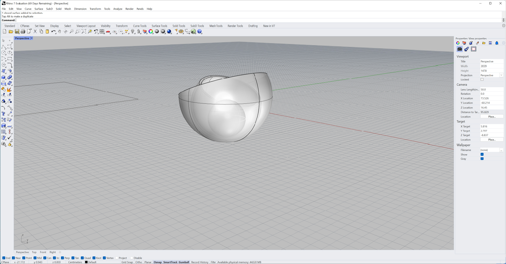
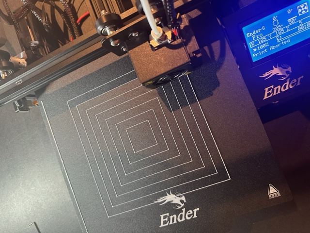
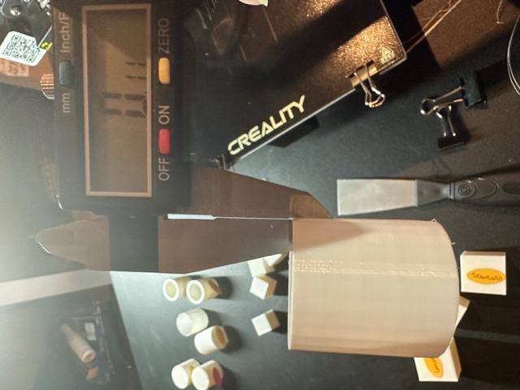

Jody's Assignment 3

Here is my documentation for assignment 3:
It took an entire day to put the Ender-3 Pro together and complete the level tests!

My very first print didn't go so well - I learned that the bed should be 70 degrees, not 60, to avoid the PLA sticking to the print and sliding it around the bed:
I had to carefully measure and develop my shapes in Rhino, which meant being absolutely certain that the default setting was on centimeters and not millimeters. I also learned that if I clicked the dot on the gumball arrows that I could type in the number of measurement in a text box - very handy shortcut!:
Then came Cura, and experiments in its various settings. Turns out its not too difficult, though I did get confused on the spiralized tube. Still, I was, after many tries, able to get everything printed:

Some shapes came out pretty well on the first print. Some didn't start off very stable, and I had to abort those print jobs. My tubes and cylinders came out at 2.7cm instead of 3, though I don't know why. I did not have time to reprint them, so I rounded up..
Here are my cubes:
Again, while the cubes measured perfectly in Rhino and Cura, they came out at 27.1, so just a little off. I have to keep working on adjustments, but as this was my second run of cubes, I was out of time for a third.
Here are my tubes:

As you can see, I did have a change to re-print my single layer extrusion tube, and now it was over 3cm, but only by a small measure.

Here are my cylinders:
Oops.
This is .001 Tolerance.
This is 0.1 Tolerance.
Here are all the initial shapes, before starting on my nested object:

Now it was time to start sketching out what I envisioned for my nested object:
I did have real-world inspiration for my idea in a set of wooden nesting balls I'd received as a child:
Wow. Well, that was going to take over 2 days to print! I had to re-think, and fast - I was running out of time (and very short on sleep).
New idea - Half-spheres nesting a sphere in the middle. Only 19 hours! I could get that done in the nick of time!
I came up with a new sketch:
Then I set to work on Rhino:
Off to Cura for adjustments and ensuring my nesting layers were of the desired thickness (double extrusion) and that the center sphere was solid. I had to import two files (the center sphere and the two outer layers) and assemble them in Cura:
Then the printer malfunctioned. I had to clean out the nozzle and the PRFE tube and then reload filament, relevel the printer - which took three tries - and then start to try and print my nested object. Unfortunately, finding the right heat for the nozzle and bed took a few tries too, and I still didn't find the perfect combination. The glass plate also warped, so I don't recommend using those.
I started my "well, it's the best so far" print job finally, 4 hours later than planned, The job is over 19 hours, and I started it at 9PM on Monday night, so I don't think it will be finished in time for Tuesday's class.
Here is my nested object printing after 13.5 hours, with 6 hours to go:
Soon after, I realized that the printer wasn't printing anymore, just going through the motions, hovering over the nested object. Upon a closer look, I realized that the casing around the nozzle was melting over the nozzle:
This left me with a partially complete nested object:
At this point, after such a large number of printer-related failures during this project, I have filed a complaint with Creality (luckily I have documentation), and I have ordered a higher-quality Ender series printer. Numerous breakdowns and problems hold up projects, add stress, deprive me of sleep, and take up too much time.
These are images of my partially finished nested object (which is, technically, still a nested object).